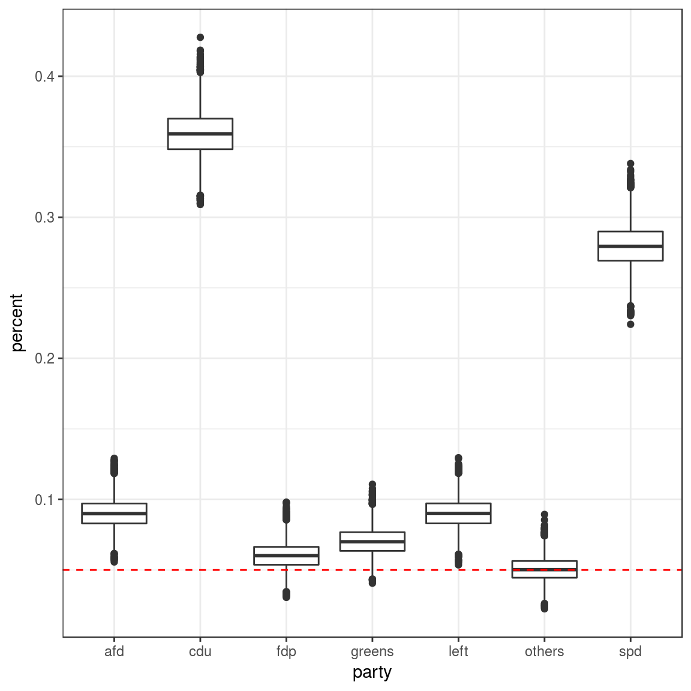
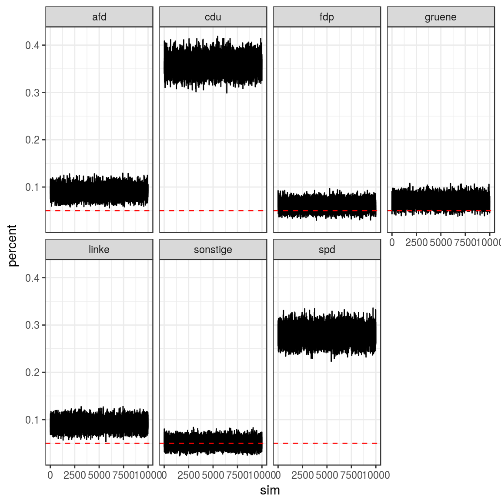

library(magrittr)
library(tidyr)
library(purrr)
library(dplyr)
library(coalitions)
library(ggplot2)
theme_set(theme_bw())temp <- scrape_wahlrecht() %>% slice(1) %>% collapse_parties() %>% unnest()## Warning: 1 failed to parse.
## Warning: 1 failed to parse.temp %<>%
mutate(
respondents = 1000L,
percent = c(36, 28, 7, 6, 9, 9, 5),
votes = respondents * percent/100) %>%
nest(party:votes, .key=survey)
set.seed(29072017)
draws <- map(temp$survey, draw_from_posterior, nsim=1e4, correction=0.01) %>%
flatten_df()
draws_long <- gather(draws, party, percent, cdu:others) %>%
group_by(party) %>%
mutate(sim = row_number()) %>% ungroup()ggplot(draws_long, aes(x=party, y=percent)) +
geom_boxplot() +
geom_hline(yintercept = 0.05, lty=2, col=2)
## chains
ggplot(draws_long, aes(x=sim, y=percent)) +
geom_path() +
geom_hline(yintercept = 0.05, lty=2, col=2) +
facet_wrap(~party, nrow=2)
## # A tibble: 7 x 2
## party entryprob
## <chr> <dbl>
## 1 afd 1.00
## 2 cdu 1.00
## 3 fdp 0.874
## 4 greens 0.986
## 5 left 1.00
## 6 others 0.502
## 7 spd 1.00